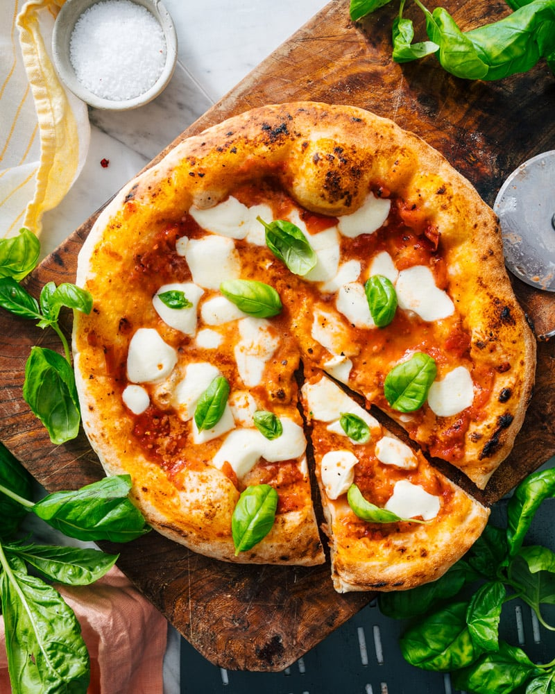

Pizza Margherita

Description
Margherita pizza is a classic thin-crust Italian pizza that originated in Naples
and is named after Queen Margherita of Savoy.Legen has it that during her visit to Naples
in 1889, she was served a pizza that was made with the colors of the Italian flag: red
(tomatoes), white (mozarella), and green (basil leaves). The traditional Margherita pizza
is topped with tomato sauce, fresh mozzarrella cheese, basil leaves, sometimes grated
Parmesan cheese and then tipically baked in a wood-fire oven.
Ingredients
Fort the base
- 300g strong bread flour
- 1 tsp instant yeast
- 1 tsp salt
- 1 tbsp extra-virgin olive oil, plus extra for drizzling
For the tomato sauce
- 100 ml passata
- handful fresh basil or 1 tsp dried basil
- 1 garlic clove, crushed
For the topping
- 125g ball mozzarella, sliced
- handful grated or shaved parmesan
- handful of cherry tomateos, halved
To finish
Steps
- Make the base: Put the flour into a large bowl, then stir in the yeast
and salt. Make a well, pour in 200 ml warm water and the olive oil and bring
together with a wooden spoon until you have a soft, fairly wet dough. Turn onto
a lightly floured surface and knead for 5 mins until smooth. Cover with a tea towel
and set aside. You can leave the dough to rise if you like, but it's not essential.
- Make the sauce: Mix the passata, basil and crushed garlic together, then season to taste.
Leave to stand at room temperature while you get on with shaping the base.
- Roll out the dough: on a floured surface, roll out the dough into large rounds, about 25cm across
using a rolling pin. The dough needs to be very thin as it will rise in the oven.
- Top and bake: heat the oven to 240C/220C fan/gas 8. Put another baking sheet or an upturned
baking tray in the oven on the top shelf. Smooth the sauce over bases, scater with cheese
and tomatoes, drizzle with olive oil and season. Put the pizza on top of the preheated sheet
or tray. Bake for 8-10 mins until crisp. Serve with a little more olive oil, and basil leaves
if using.